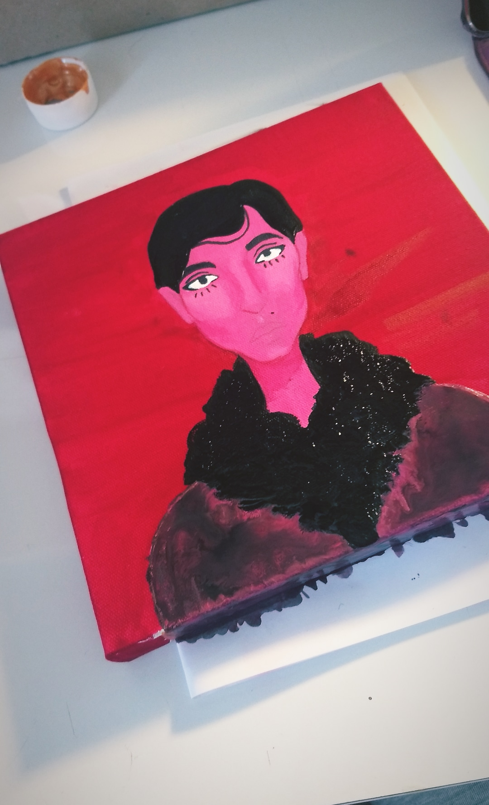
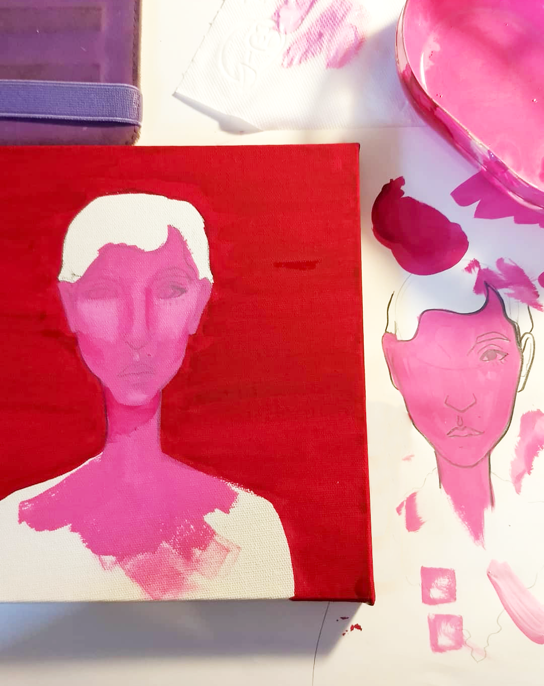
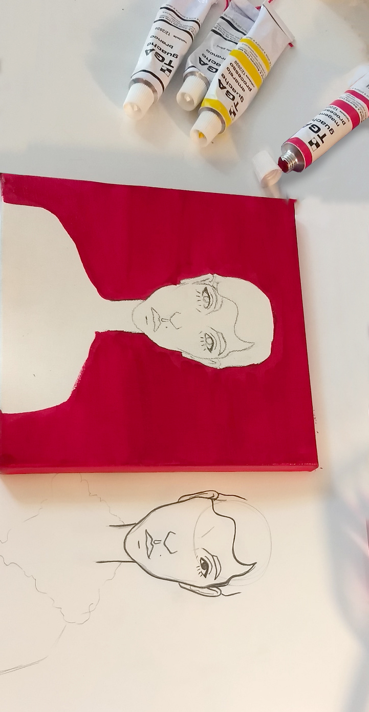

moça rosa
projeto experimental desenvolvido por: Giulia Golfari
vindo de um período ocioso, essa moça rosa não vai além da sua aparência. com
traços fortes vermelhos e que beiram o monocromático, ela tem uma cara de ser
chique e nojenta. feita com 3 simples tons de gouache em uma tela bem pequena,
por mais rica e chique que ela pareça, ela foi feita de forma bem simples e barata.



